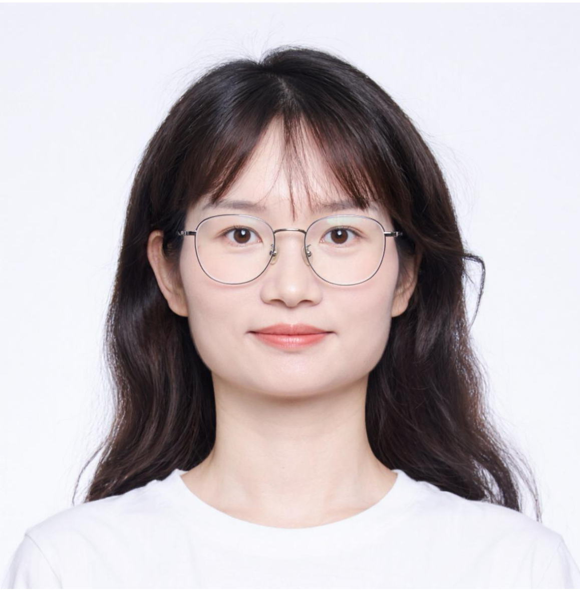

2025.11
- 至今，
- 资配匹配：负责贷款订单与资金产品的实时定价与批量最优匹配，并搭建同口径仿真评估链路
- 征信评分：基于征信特征构建中征信分回归模型（主看排序与分箱，RMSE 作回归监控），完成预测服务上线与一致性校验
- 素材智能化：搭建图像/视频多模态描述与广告视频 Prompt 生成能力，支撑投放素材理解与 AIGC 生产
资配匹配征信建模多模态LLM工程

约 5 年算法经验：平安科技 → 蚂蚁网商 → 嘉银科技（高级AI工程师）。长期在消费金融做算法研发与落地，覆盖风控评分、智能营销、资金匹配与广告素材智能化。
方向：机器学习与推荐、多任务学习（MMOE/PLE）、因果推断、多模态大模型工程；重视可核对指标与上线闭环。